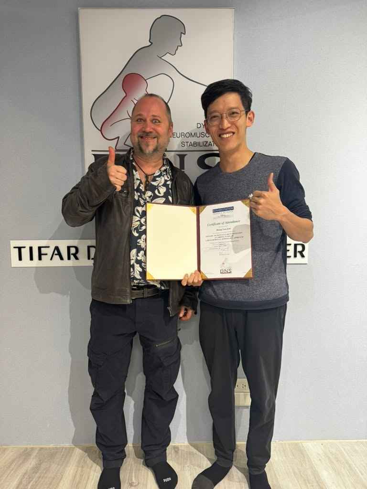
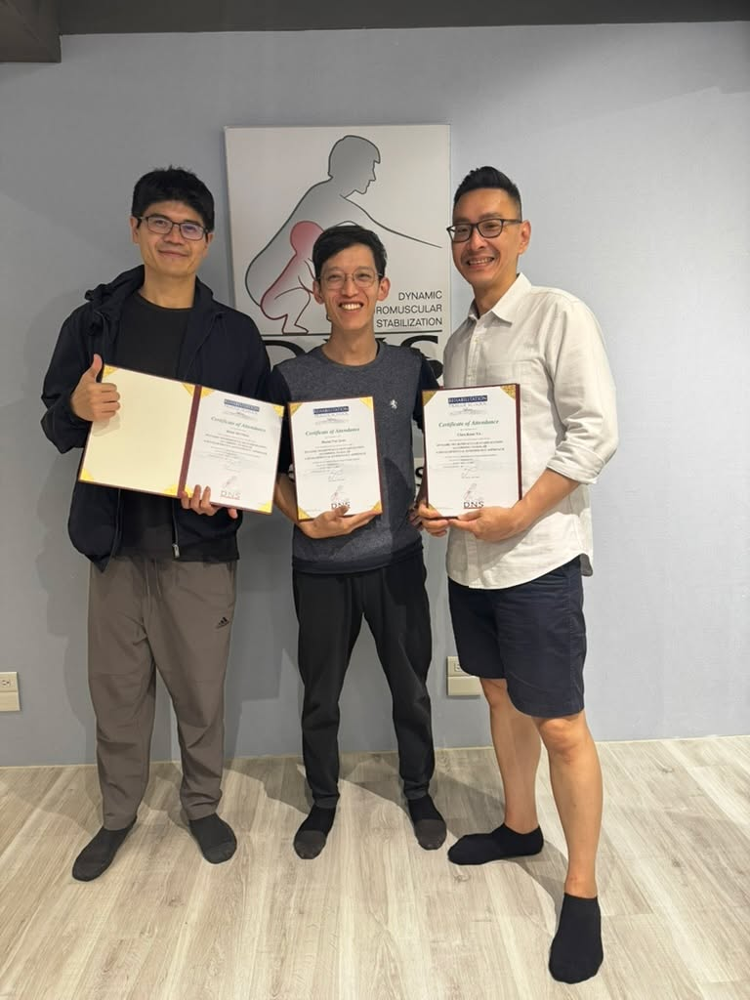
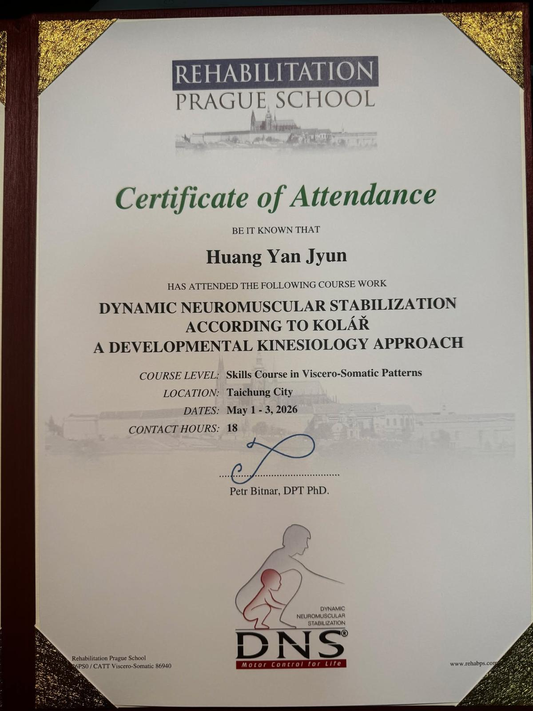

開啟全新視野：布拉格「內臟鬆動術」
【 開啟全新視野：布拉格「內臟鬆動術」 】
一年前，得知布拉格學院（Prague School）要把「內臟鬆動術 (Visceral Manipulation)」的課程辦在台北，我毫不猶豫直接手刀報名。這三天的精實課程，不僅讓我大呼過癮，更正式為我開啟了「內臟-筋膜-神經系統」的全新宏觀視野。
🔄 內科與傷科的雙向對話
身為中醫師，我們總說「牽一髮而動全身」，強調全人醫療與內傷科的整合。過去在處理疼痛時，常從肌肉骨骼的力學結構切入，當研究得夠深時會發現：解開了結構的結，有時竟連帶改善了患者看似內科系的症狀。
那麼，反過來的邏輯也成立嗎？這堂課給了我一個無比堅定的答案：沒錯，絕對會！
人體本就是一個互相影響、高度聯動的生命體。當飲食失衡、作息紊亂或情緒壓力超載時，身體為了代償適應，會引發器官器質性的發炎，進而改變內臟本體與其周邊筋膜的結構張力。這股隱藏在深層的異常張力，最終會向外傳遞，變成我們感受到的「結構性傷科疼痛」。
這段過程，完美印證了中醫常講的疾病進程：由「神病」到「氣病」，最終發展為實質的「形病」。
☯️ Viscero-Somatic 與中醫的陰陽觀
課程第一天，Petr 老師的投影片首頁就直球對決地寫著兩個核心：
Viscero-Somatic： 源頭在內臟，表現在身體軀幹。
Somato-Visceral： 源頭在身體軀幹，表現在內臟。
這兩個系統一體兩面、互為根本，也相互調節。用“我自己的”中醫話來說，把它們視為共同呈現在人體上的一對「陰陽」，完全不為過。透過特定手法去釋放內臟筋膜，為腹腔找回應有的空間與滑動性，不僅能促進內臟功能，更能解除其對外在結構的隱形束縛。這或許也是一種宏觀的治本視野。
💡 臨床視角：這些痛，可能也是內臟在求救！
在未來的診療裡，面對痠痛的處理，便開始納入「腹腔與內臟」的張力評估。
為什麼呢？舉個例子：有些人長期的「慢性胃炎」或「消化不良」，往下牽扯的筋膜張力，往往是造成你「嚴重圓肩」與怎麼治都治不好的「膏肓背痛」的隱形元兇；又或者，長期經痛、婦科發炎的女性，骨盆腔內的內臟張力失衡，常常就是那種反覆發作的「慢性下背痛」或「尾椎痛」的幕後黑手。
當內臟筋膜的視角開啟，治療就能做得更全面、更透徹！
👨🏫 在歡笑中淬鍊大師「眉角」
說到 Petr 老師，真不愧是布拉格學院裡人稱的「天才二人組」之一。他的教學極度高效，卻又無比歡樂，整個教室時常迴盪著他的笑聲。
在看似玩樂般輕鬆、毫不緊繃的氛圍中，他以極度開放的心態接住大家各種問題，更不厭其煩地重複強調手法的每一個「眉角」。能在這樣的氣氛下向大師學習，真的是非常幸運又開心的一件事。
特別感謝我的練習好夥伴 隔壁老陳 冠宇醫師 MD, PT, MSc，能被這樣帥氣的學長罩，真的是讓我學習事半功倍。
這三天的進修，讓我手中又多了一把能拆解複雜疼痛的利器。接下來就是好好沉澱、消化，迫不及待想將這些內臟鬆動的手法，轉化為臨床上面對千變萬化病症的解法！
#VisceralManipulation #內臟筋膜 #內外兼治 #全人醫療 #中醫徒手 #持續進修
太初中醫診所 東門中醫
中醫師 黃彥鈞


